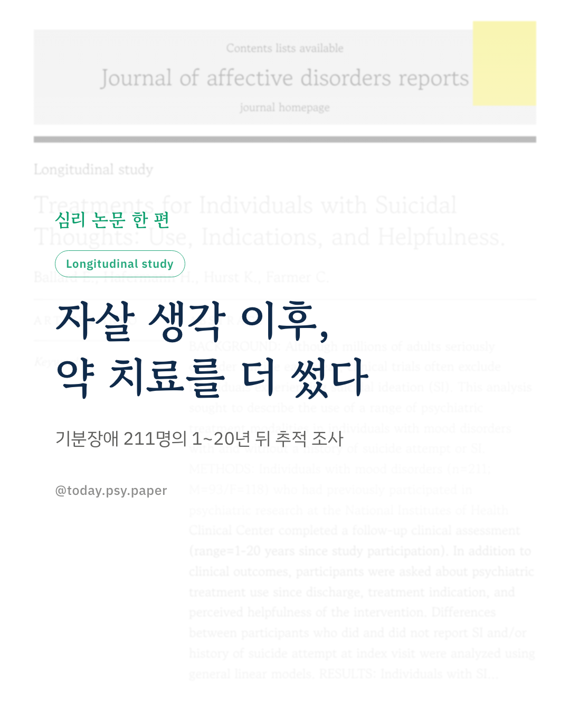
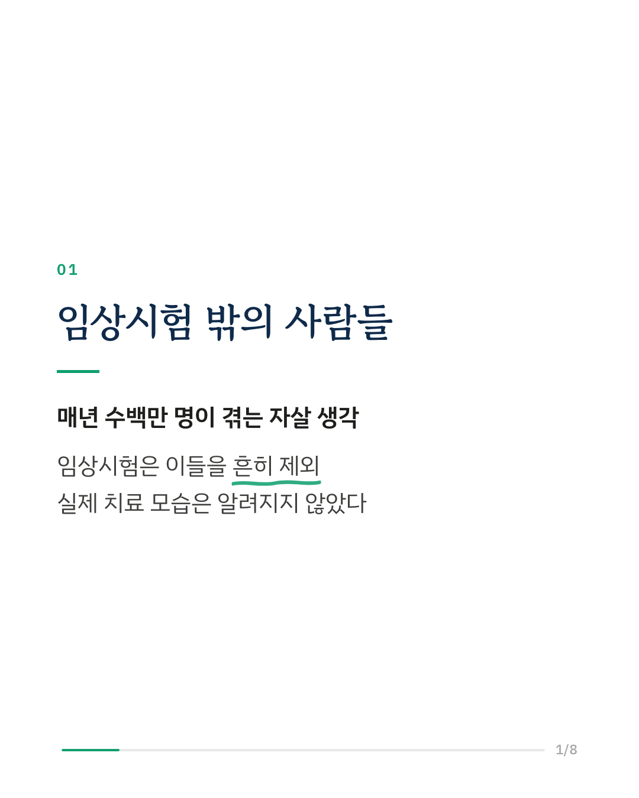
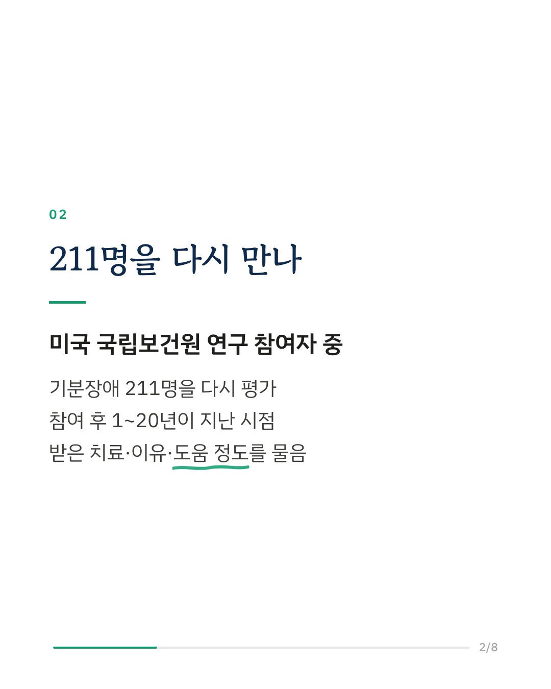
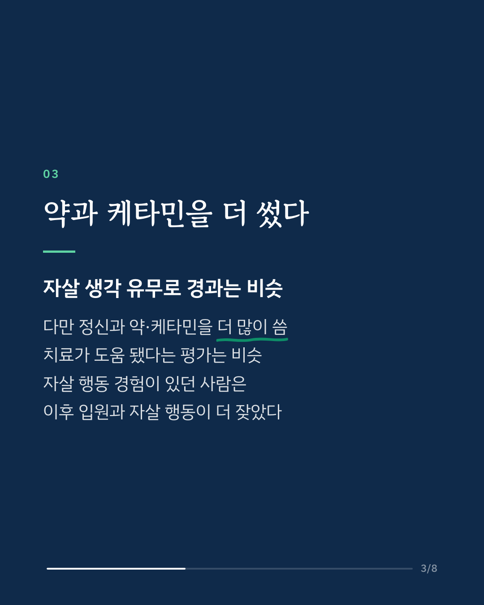
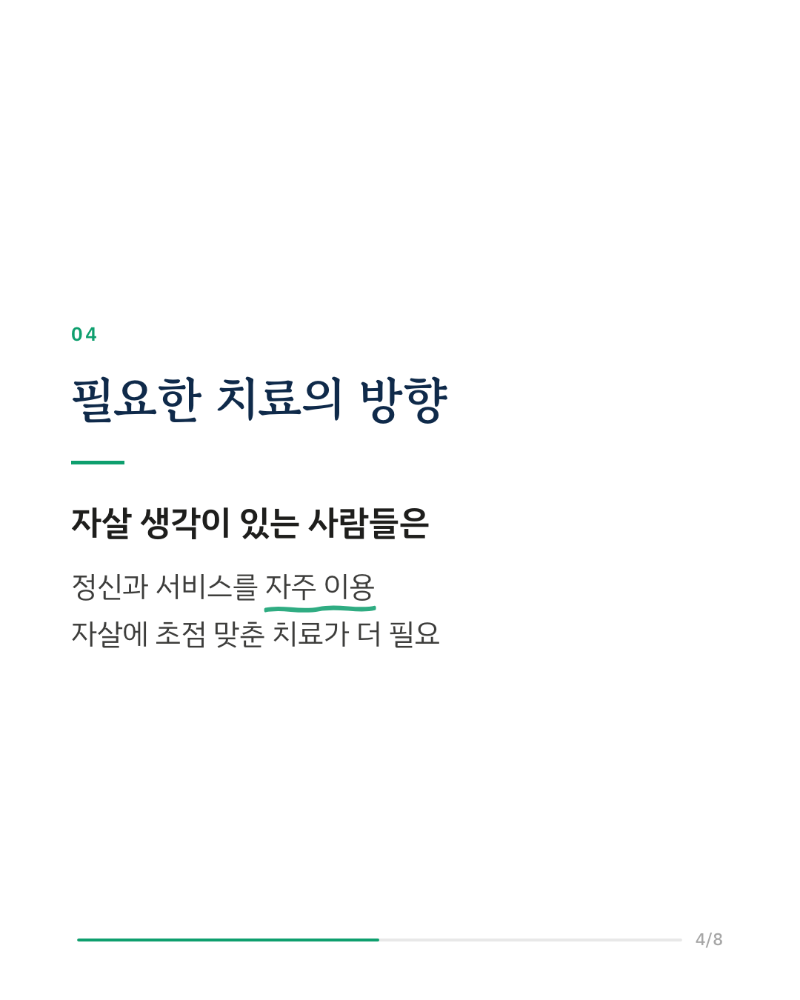
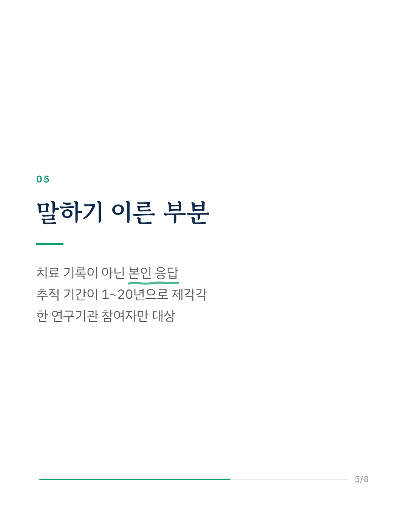
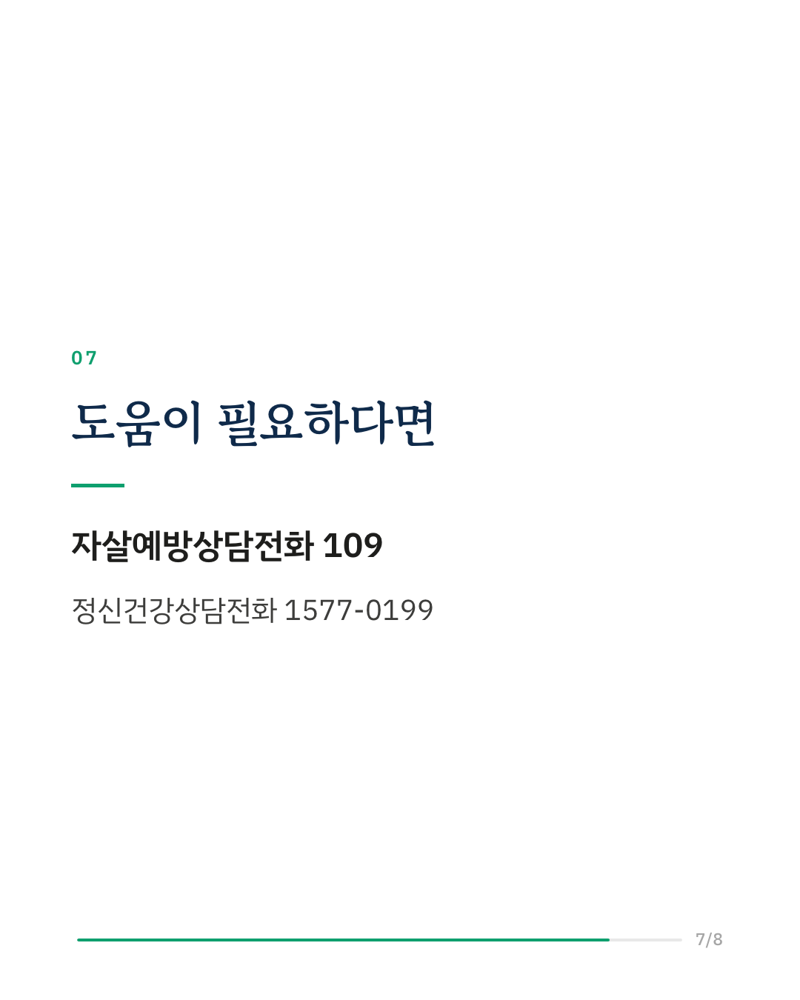
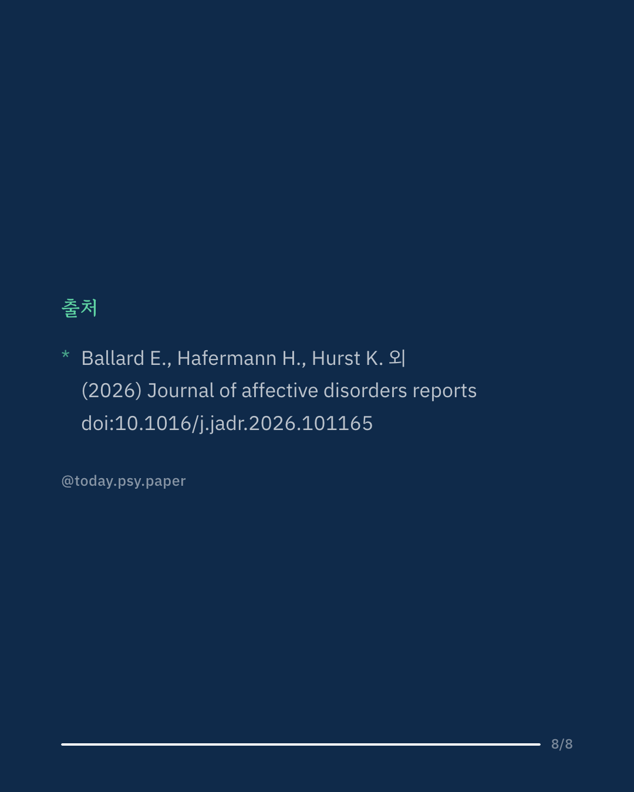

매년 많은 사람이 자살 생각을 겪지만, 우울증 같은 기분장애 치료를 시험하는 임상시험은 자살 생각이 있는 사람을 흔히 제외합니다. 그래서 이들이 실제로 어떤 치료를 받는지는 잘 알려져 있지 않았습니다. 미국 국립보건원 연구에 참여했던 기분장애 환자 211명을 1~20년 뒤 다시 평가했습니다. 첫 방문 때 자살 생각이 있던 사람은 없던 사람과 이후 경과가 대체로 비슷했지만, 정신과 약과 케타민을 더 많이 사용했습니다. 치료가 도움이 됐다는 평가는 두 집단이 크게 다르지 않았습니다. 첫 방문 때 자살 행동 경험이 있던 사람은 이후 입원과 자살 행동이 더 잦았습니다. 연구진은 자살 생각이 있는 사람들이 정신과 서비스를 자주 이용하는 만큼, 자살에 초점을 맞춘 효과적인 치료가 더 필요하다고 말합니다. 다만 치료 이용은 기록이 아닌 본인 응답이었고, 추적 기간도 사람마다 1년에서 20년까지 차이가 컸습니다. 출처: Journal of Affective Disorders Reports (2026), 'Treatments for Individuals with Suicidal Thoughts: Use, Indications, and Helpfulness.' DOI: 10.1016/j.jadr.2026.101165 힘든 마음이 들 때는 자살예방상담전화 109, 정신건강상담전화 1577-0199에서 도움을 받을 수 있습니다. #임상심리 #정신건강정보 #심리학연구 #논문리뷰 #자살예방 #기분장애 #케타민 #정신과치료
python3 publish.py 42808010